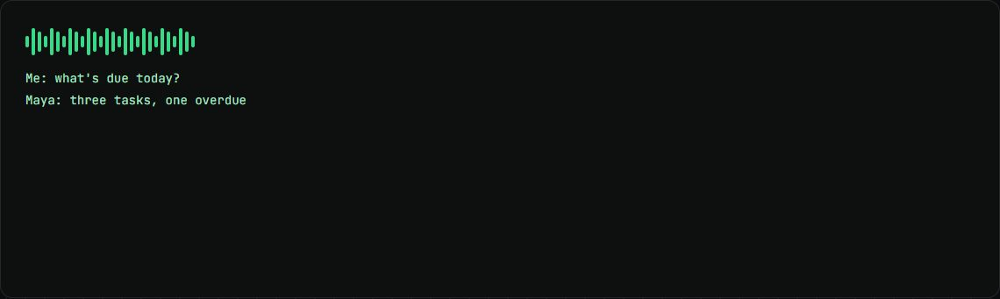
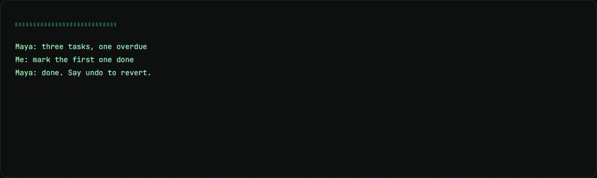

Maya
A voice agent for my own work: it talks, acts in ClickUp and on my laptop, and never deletes anything.
my role Building it: 107 commits so far.
The problem
Busy days are full of small ClickUp and file chores. I wanted to say them out loud and have them done safely.
How it works
- Speech streams straight to a fast model.
- A local voice model speaks each sentence as soon as it is written.
- It can reply in ClickUp, update tasks, and find, open and send files.
- Anything it does can be undone for 10 minutes.
What changed
- 2.1 to 3.7 sto first sound
- 55test files
- $0.001per exchange
What I built
- The voice loop, measured for latency.
- ClickUp and file tools with hard safety rules: no deletes, no secrets.
- 55 test files, including a tripwire test against any delete path.
Stack
- Node.js
- TypeScript
- MCP
- Kokoro TTS
- ClickUp API
Stills

